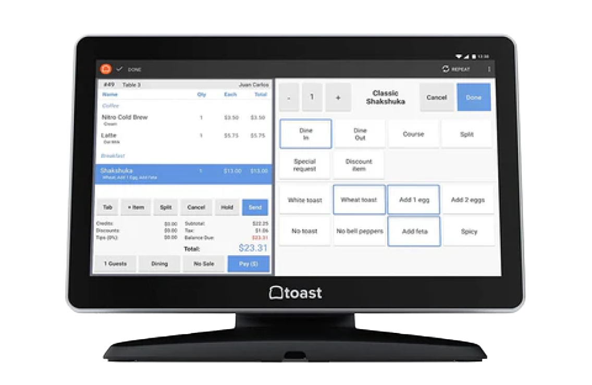
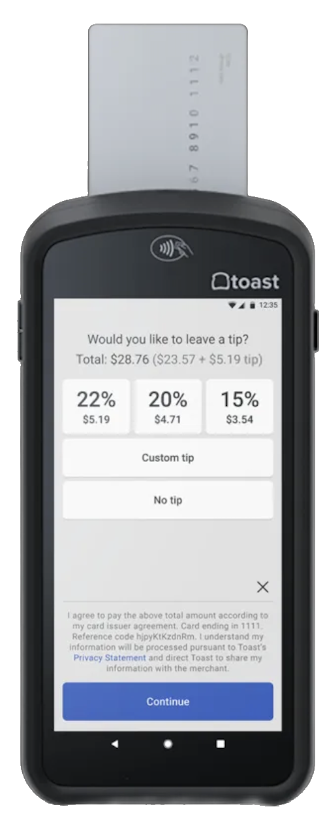
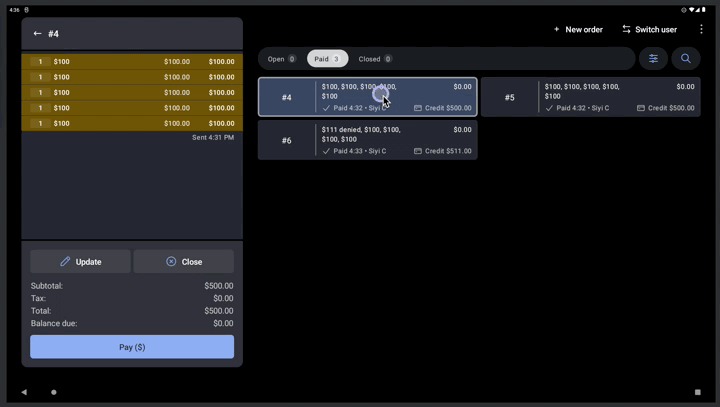
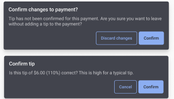

A clearer close
to a long shift.
Making tip entry and check closure easier, without losing sight of incomplete work.
- My role at the time
- Senior product designer
- My focus
- Solution direction & interaction design
- Partners
- Product management & engineering
- Platform
- POS terminals & handhelds


Silent, looping previews. Reduced-motion preferences disable automatic playback. Original recording sizes: terminal 800 × 464; handheld 440 × 876.
Original terminal GIF ↗ · Original handheld GIF ↗01 / Context
The shift was over.
The closeout work wasn’t.
Staff still had to match paper receipts to payments, add tips, and close the remaining checks. Repeated navigation made that work harder to finish.
I owned the solution direction and explored two versions. The work covered problem discovery, workflow and visual design, validation, and development follow-ups. Product management and engineering were partners in determining which direction the system could support.
Make closeout more efficient while keeping payment information accurate and incomplete checks visible.


02 / The constraint
The unit of entry
wasn’t the unit of closure.
A check could have multiple payments. Each payment needed tip information, but the system could only close the entire check.
If any payment was incomplete, the check had to stay open. There was no payment-level close action. Meanwhile, handwritten tip receipts could be mixed together rather than organized by check.
Illustrative model, not the Toast interface. A confirmed zero tip is different from missing information.
That mismatch matters: finishing one receipt does not mean every payment on the check is ready. The design had to make progress possible without suggesting the check had successfully closed.
03 / The decision
Two versions.
One unsupported assumption.
I explored a payment-first version and a check-centered version. The first fit the receipt-by-receipt task, but review with PM and engineering exposed the problem with treating payments as independently closable items.
Follow the receipt.
Efficient for entering one tip at a time, but the closing model broke down when another payment on the same check was incomplete.
Blocked by closure semanticsKeep the whole check visible.
Use the supported check-level boundary, while making entry direct and retaining the tips staff had already entered.
Chosen directionSave the entered tips.
Leave incomplete checks open.
Let staff continue.
This kept the distinction between saved work and completed work clear. It did not magically sort the paper receipts: staff still needed to find the relevant payment.
04 / The design
Keep the context.
Remove the extra travel.
The chosen design brought the check list and tip-entry area together. Staff could focus on an entry without leaving the surrounding check context.

Silent animations play and loop while visible. Use the controls to pause or seek. With reduced motion enabled, press Play to start. The source's illustrated task path changed from 5–6 clicks across 4 pages to 2 clicks on 1 page; this is not a benchmark for every scenario.
Make the current task easy to see.
A scannable list, familiar payment cues, and a dedicated entry area reduce visual competition.
Protect intent at the edges.
Iteration addressed misleading default zero values, unsaved changes, and unusual-tip confirmation. An explicit zero-tip decision must remain distinct from missing information.



Adapt the surface, preserve the rules.
The delivery set included 15-inch and 10-inch terminal layouts, handhelds, light/dark themes, and empty/error states. The check/payment relationship remained the same.


05 / Directional trial outcomes
A promising signal,
with limits to the evidence.
shorter closeout time
Approximate trial estimatefewer support tickets
Approximate trial estimateThe original portfolio describes a bar-and-lounge trial. These figures are directional estimates, not independently verified measurements. The precise metric definitions, denominators, and comparison methodology still need confirmation. They do not establish causality or results across all restaurants.
06 / Reflection
Preserve progress.
Keep incomplete work visible.
The design decision was to work with the real closure boundary, while giving people a way to continue when information was missing.
Future opportunities in the original case included other bulk actions, such as void and reopen, and further discovery around service types and permissions. Those were opportunities, not delivered scope.
Retrospective discussion points
What would I validate earlier? The unit of completion with engineering, and an outcome measurement plan with clearly defined tasks and trial cohorts.
Proposed present-day reflection for review, not a claim about historical project activities.
Sources and scope notes
Adapted from the user-provided Figma portfolio and the presenter's clarifications. The project role was senior product designer. Source links may require Figma access.
This is a local draft. Public-sharing permissions and outcome definitions should be confirmed before publication.
Thanks for reading